Предисловие (Przedmowa)
Cześć! Niedawno postanowiłem nauczyć się języka rosyjskiego w stopniu przynajmniej komunikatywnym, więc zacząłem szukać odpowiednich materiałów. Natknąłem się na kurs wideo od Katiuszy i bardzo mi się spodobał. Niestety, samo oglądanie bez ćwiczeń na dłuższą metę daje niewiele, więc postanowiłem przygotować poniższe materiały w ramach treningu. Potraktuj je jako notatki lub uzupełnienie informacji przedstawionych na wspomnianym wcześniej kursie wideo. Jeśli czegoś nie rozumiesz, nie przejmuj się - niektóre przykłady do pełnego zrozumienia wymagają lepszej znajomości słownictwa i gramatyki, co nabywa się z czasem.
Notatki tworzone są w duchu wytyczonym przez Katiuszę, tj. im dalej w las, tym bardziej staram się używać języka rosyjskiego w miejsce języka polskiego.
Урок 1 (Lekcja 1)
Link do materiału wideo: NAUCZ SIĘ MÓWIĆ PO ROSYJSKU | LEKCJA 1
Алфавит (alfabet)
Język rosyjski posługuje się pismem zwanym grażdanką – graficzną odmianą cyrylicy opracowaną w Rosji w XVIII w., zmodyfikowaną w okresie reform alfabetu rosyjskiego na początku XX w. Od tego czasu alfabet języka rosyjskiego składa się z 33 liter (буквы), w tym 2 znaków ortograficznych, 10 samogłosek (гласные) i 21 spółgłosek (согласные).
Согласные: б в г д ж з й к л м н п р с т ф х ц ч ш щ
Гласные: а о и е ё э ы у ю я
Беззвучные: ь ъ
Samogłoski zaznaczone na czerwono to tzw. samogłoski jotowane (йотированные гласные).
Według moskiewskiej szkoły fonologicznej, system fonologiczny języka rosyjskiego składa się z 39 fonemów: 5 samogłoskowych i 34 spółgłoskowych.
Spółgłoski możemy podzielić na:
- twarde (твёрдые) i miękkie (мягкие),
- dźwięczne (збонкие) i bezdźwięczne (глухие).
Spółgłoski miękkie to spółgłoski, przy których wymawianiu środkowa część języka unosi się ku podniebieniu, w przeciwieństwie do spółgłosek twardych. Miękkość spółgłosek zależy od stojących obok samogłosek е, ё, ю, я, и lub miękkiego znaku ь.
Spółgłoski dźwięczne to spółgłoski, przy których wymowie więzadła głosowe drżą, w przeciwieństwie do spółgłosek bezdźwięcznych. Samogłoski to z kolei głoski wyłącznie dźwięczne.
Niektóre spółgłoski ze względu na dźwięczność tworzą pary, tzw. парные звуки. Spółgłoski nietworzące par to непарные звуки.
Парные звуки: б-п в-ф г-к д-т з-с ж-ш
Непарные звонкие звуки: л м н р й
Непарные глухие звуки: х ц ч щ
Spółgłoski ж, ш, ц są zawsze twarde, tj. zawsze wymawiane twardo. Oznacza to, że niezależnie od samogłoski następującej po tych spółgłoskach, ich brzmienie nie ulega zmianie. Analogicznie, spółgłoski й, ч, щ są zawsze wymawiane miękko.
Podobnie jak w języku polskim, każdą spółgłoskę stojącą na końcu wyrazu wymawiamy bezdźwięcznie, np. w słowie клуб (klub), б wymawiamy п.
| Буква | Курсив | Почерк | Название | Иллюстрация | Слово |
|---|---|---|---|---|---|
| А а | А а | а | 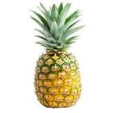 | ананас | |
| Б б | Б б | бэ | 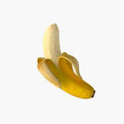 | банан | |
| В в | В в | вэ | 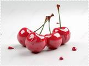 | вишня | |
| Г г | Г г | гэ | груша | ||
| Д д | Д д |  | де | дом | |
| Е е | Е е |  | е | еда | |
| Ё ё | Ё ё | ё | 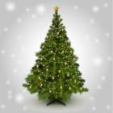 | ёлка | |
| Ж ж | Ж ж | жэ | 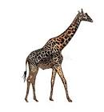 | жираф | |
| З з | З з |  | зэ | 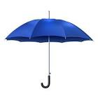 | зонт |
| И и | И и | и | 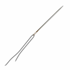 | игла | |
| Й й | Й й | и краткое | 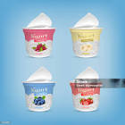 | йогурт | |
| К к | К к |  | ка | кот | |
| Л л | Л л | эл | 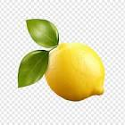 | лимон | |
| М м | М м | эм | машина | ||
| Н н | Н н | эн | 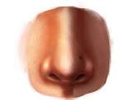 | нос | |
| О о | О о | о | окно | ||
| П п | П п | пэ | пёс | ||
| Р р | Р р |  | эр | роза | |
| С с | С с | эс | солнце | ||
| Т т | Т т | тэ | тигр | ||
| У у | У у | у | 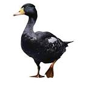 | утка | |
| Ф ф | Ф ф | эф | фотоаппарат | ||
| Х х | Х х | ха | 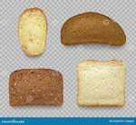 | хлеб | |
| Ц ц | Ц ц |  | цэ | 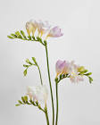 | цветок |
| Ч ч | Ч ч | чэ | 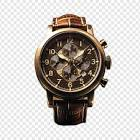 | часы | |
| Ш ш | Ш ш |  | ша | 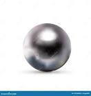 | шар |
| Щ щ | Щ щ | ща | щука | ||
| Ъ ъ | Ъ ъ |  | твёрдый знак | подъезд | |
| Ы ы | Ы ы | ы | мышь | ||
| Ь ь | Ь ь | мягкий знак | дверь | ||
| Э э | Э э | э или э оборотное | 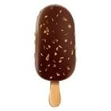 | эскимо | |
| Ю ю | Ю ю | ю | 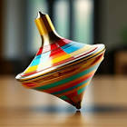 | юла | |
| Я я | Я я | я | 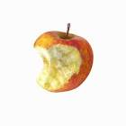 | яблоко |
Czytając teksty w języku rosyjskim, można zauważyć, że czasem Ё (ё) jest pisane bez kropek, tj. jako Е (е). To nie przypadek. Litery Ё (ё) używa się sporadycznie, głównie w książkach dla dzieci i uczniów, w nazwach własnych i rzadko występujących słowach, ewentualnie by uniknąć dwuznaczności.
Przed reformą ortografii w 1917 roku alfabet rosyjski posiadał m.in. literę ѣ (tzw. jać - ять). Można ją spotkać w starszych publikacjach, ale również współcześnie w pop kulturze jako przejaw nostalgii. Jej wymowa jest tożsama z е.
Словесное ударение (akcent wyrazowy)
Samogłoski w wyrazie definiują składające się nań sylaby (слоги). Samogłoska w wyrazie może być akcentowana (ударная) lub nieakcentowana (безударная).
Charakterystyczną cechą języka rosyjskiego na tle innych języków słowiańskich jest akanie (аканье), tj. wymowa dźwięku podobnego do а na miejscu nieakcentowanej głoski о. To zjawisko nazywane jest również redukcją litery о.
W języku rosyjskim nie ma ścisłych reguł akcentuacji – trzeba uczyć się go wraz z wymową każdego wyrazu. To ważne, gdyż błędy akcentowe mogą zmienić znaczenie wyrazu, np. за́мок (zamek) i замо́к (zamek do drzwi).
Наречия (przysłówki)
| Разряды (Kategorie przysłówków) | Вопросы, на которые отвечают (Pytania, na które odpowiadają) |
|---|---|
| Наречия образа действия (sposobu) | Как? Каким образом? (Jak? Jakim sposobem?) |
| Наречия времени (czasu) | Когда? (Kiedy?) |
| Наречия места (miejsca) | Где? Куда? Откуда? (Gdzie? Dokąd? Skąd?) |
| Наречия меры и степени (miary i stopnia) | Сколько? (Ile?) Насколько? (Jak bardzo? W jakim stopniu? O ile?) |
| Наречия причины (przyczyny) | Почему? (Dlaczego?) Отчего? (Dlaczego? Z jakiego powodu? Z jakiej przyczyny? Z czego? Od czego?) |
| Наречия цели (celu) | С какои целью? Для чего? (W jakim celu? Po co?) |
Примеры (przykłady, trudne!)
- Как ты готовишь борщ? (Jak gotujesz barszcz?)
- Я готовлю борщ медленно и тщательно. (Gotuję barszcz powoli i dokładnie.)
- Каким образом ты научился играть на гитаре? (W jaki sposób nauczyłeś się grać na gitarze?)
- Я научился играть самостоятельно, по видеоурокам. (Nauczyłem się sam, z tutoriali wideo.)
- Когда мы встретимся? (Kiedy się spotkamy?)
- Давай встретимся завтра вечером. (Spotkajmy się jutro wieczorem.)
- Где ты оставил ключи? (Gdzie zostawiłeś klucze?)
- Я оставил их там, на столе. (Zostawiłem je tam, na stole.)
- Куда ты едешь на выходных? (Dokąd jedziesz na weekend?)
- Я еду за город, на дачу. (Jadę za miasto, na działkę.)
- Откуда ты только что пришёл? (Skąd właśnie przyszedłeś?)
- Я пришёл от врача. (Przyszedłem od lekarza.)
- Сколько сахара тебе положить в чай? (Ile cukru mam ci wsypać do herbaty?)
- Положи две ложки, пожалуйста. (Wsyp dwie łyżeczki, proszę.)
- Насколько сложный этот экзамен? (Jak trudny jest ten egzamin?)
- Он достаточно сложный, нужно хорошо подготовиться. (Jest dość trudny, trzeba się dobrze przygotować.)
- Почему ты опоздал? (Dlaczego się spóźniłeś?)
- Я опоздал из-за пробок. (Spóźniłem się przez korki.)
- Отчего ты так расстроен? (Z jakiego powodu jesteś taki zdenerwowany?)
- Я расстроен от неожиданных новостей. (Jestem zdenerwowany przez niespodziewane wiadomości.)
- С какой целью ты звонил директору? (W jakim celu dzwoniłeś do dyrektora?)
- Я звонил, чтобы обсудить важный проект. (Dzwoniłem, żeby omówić ważny projekt.)
- Для чего ты купил эту книгу? (Po co kupiłeś tę książkę?)
- Я купил её для изучения истории искусства. (Kupiłem ją do nauki historii sztuki.)
Где? Возможные ответы (możliwe odpowiedzi)
- тут (tutaj), np. Где Антон? Он тут. (Gdzie jest Anton? On jest tutaj.)
- там (tam), np. Ето дом. Там мама и папа. (To jest dom. Tam są mama i tata.)
- здесь (tutaj, bardziej formalnie), np. Где вход? Здесь вход. (Gdzie jest wejście? Wejście jest tutaj.)
- дома (w domu), np. Где мама? Она дома. (Gdzie jest mama? Mama jest w domu.)
- в парке, по парку, на столе (w parku, na stole), np. Где ты гуляешь? Я гуляю по парку. (Gdzie spacerujesz? Spaceruję po parku.)
Простые и сложные предложения (zdania proste i złożone)
Podobnie jak w języku polskim, w języku rosyjskim zdania możemy podzielić na proste i złożone. Jeśli zdanie posiada jeden podmiot (подлежащее) i jedno orzeczenie (сказуемое), nazywamy je zdaniem prostym (простое предложение). Jeśli więcej, takie zdanie nazywamy zdaniem złożonym (сложное предложение).
Zdania złożone posiadają często spójniki (союзы) łączące dwa lub więcej zdań pojedynczych tworzących całość.
Сочинительные союзы (spójniki współrzędne): и (i), а (a), но (ale), да (i, ale), зато (ale za to, lecz), однако (jednak, ale), же (zaś), то-то (właśnie dlatego), или (lub), либо (albo), не то-не то (albo-albo, a to-a to), тоже (też), также (także, jak również).
Интонационные конструкции (typy intonacyjne)
Typy intonacyjne określają melodię zdania w zależności od jego celu i emocji.
Wyróżniamy cztery podstawowe typy intonacyjne ИК-1, ИК-2, ИК-3 i ИК-4:
ИК-1 (Neutralna wypowiedź oznajmująca)
Ton: Opadający na kluczowym słowie.
Użycie: Zdania neutralne, fakty.
Przykład: "Это мой дом." (To mój dom.)
(Głos opada na słowie "дом")
ИК-2 (Pytania z zaimkiem pytającym)
Ton: Wznoszący się na słowie pytającym.
Użycie: Pytania z кто, что, где, когда itp.
Przykład: "Где ты живёшь?" (Gdzie mieszkasz?)
(Głos rośnie na "где")
ИК-3 (Pytania bez zaimka, zdania niedokończone)
Ton: Ostry wzrost na kluczowym słowie + pauza.
Użycie:
Pytania typu "Ты согласен?" (Zgadzasz się?)
Zdania z niedopowiedzeniem: "Если бы ты знал..." (Gdybyś wiedział...)
Przykład: "Ты уже поел?" (Już jadłeś?)
(Głos szybko rośnie na "поел")
ИК-4 (Zdania emocjonalne, kontrast, zdziwienie)
Ton: Gwałtowny spadek na kluczowym słowie + niższa tonacja końcowa.
Użycie:
Emocje: "Какой ужас!" (Co za okropność!)
Kontrast: "Я-то пришёл, а ты?" (Ja przyszedłem, a ty?)
Przykład: "Это было потрясающе!" (To było niesamowite!)
(Głos spada na "потрясающе")
Istnieją także rzadziej omawiane ИК-5 (emfatyczne podkreślenie, porównania) i ИК-6 (zdania z enumeracją, wyliczenia).
Жи-ши пиши с буквой И!
Spółgłoski ж, ш zawsze piszemy z и, nigdy z ы, mimo że wymawiamy inaczej, np. w wyrazie жизнь (życie).
Личные местоимения (zaimki osobowe)
Zaimki osobowe to słowa zastępujące rzeczowniki oznaczające osoby:
первое лицо, единственное число: я (ja),
второе лицо, единственное число: ты (ty),
третье лицо, единственное число: он, она, оно (on, ona, ono),
первое лицо, множественное число: мы (my),
второе лицо, множественное число: вы (wy),
третье лицо, множественное число: они (oni).
Formy ты używa się do zwracania się do jednej osoby w sposób niezbyt formalny, np. do znajomych, rodziny, dzieci.
Formy вы używa się do zwracania się do grupy osób, ale również do jednej osoby w sposób bardziej formalny, np. do osób starszych, przełożonych, nieznajomych.
Имя существительные (rzeczowniki)
Rzeczownik (имя существительное) odpowiada na pytania kto? (кто?) co? (что?). Podobnie jak w języku polskim, w języku rosyjskim rzeczowniki dzielą się ze względu na rodzaj (род):
мужской (męski) - zwykle bez specyficznej końcówki, np. гриб, плащ,
женский (żeński) - zwykle mają końcówkę -а, -я, np. мама, тётя,
средний (nijaki) - zwykle mają końcówkę -о, -е, np. солнце, яблоко.
Притяжательные местоимения (zaimki dzierżawcze)
Zaimki dzierżawcze to słowa, które zastępują rzeczowniki i wskazują na przynależność. Wyrażają posiadanie i wskazują na to, do kogo dana rzecz należy.
Na lekcji pierwszej zostały omówionе zaimki dzierżawcze odpowiadające zaimkowi osobowemu я. Na lekcji drugiej zostały omówione zaimki dzierżawcze odpowiadające zaimkom osobowym ты, мы, вы.
Poniższa tabela jest podana dla kompletności.
| Личное местоимение | Чей? (Czyj?) | Чья? (Czyja?) | Чьё? (Czyje?) |
|---|---|---|---|
| я | мой | моя | моё |
| ты | твой | твоя | твоё |
| он | |||
| она | |||
| оно | |||
| мы | наш | наша | наше |
| вы | ваш | ваша | ваше |
| они |
Примеры диалогов при встрече (Przykłady dialogów przy spotkaniu)
- Привет! Как дела? (Cześć! Jak się masz?)
- Привет! Всё хорошо, спасибо! (Cześć! Wszystko dobrze, dziękuję!)
- Здравствуйте! Как ваши дела? (Dzień dobry! Jak się Pan/Pani ma?)
- Спасибо, хорошо! А у вас? (Dziękuję, dobrze! A u Pana/Pani?)
- Привет! Давно не виделись! (Cześć! Dawno się nie widzieliśmy!)
- Очень рад тебя видеть! (Bardzo się cieszę, że cię widzę!)
- Привет! Меня зовут Анна. А тебя? (Cześć! Nazywam się Anna. A ty?)
- Очень приятно! Я Максим. (Bardzo mi miło! Jestem Maksym.)
- Извините, как вас зовут? (Przepraszam, jak się Pan/Pani nazywa?)
- Меня зовут Мария Иванова. (Nazywam się Maria Iwanowa.)
- Здравствуйте! Позвольте представиться: Иван Петров. (Dzień dobry! Pozwólcie, że się przedstawię: Iwan Piotrow.)
- Очень приятно, господин Петров. Я Елена Смирнова. (Bardzo mi miło, panie Piotrow. Jestem Jelena Smirnowa.)
- Коллеги, познакомьтесь: это Алексей, наш новый программист. (Koledzy, poznajcie: to Aleksiej, nasz nowy programista.)
- Очень приятно! (Bardzo mi miło!)
W pracy, szef przedstawia nowego pracownika zespołowi:
- Саша, познакомься: это Катя, моя одногруппница. (Sasza, poznaj: to Kasia, moja koleżanka z grupy.)
- Привет, Катя! (Cześć, Kasia!)
Przyjaciel przedstawia znajomych na imprezie:
- Знакомься, это Дима. (Poznaj, to Dima.)
Skrócona wersja, szczególnie wśród młodych ludzi:
Личные местоимения и их формы: Кого зовут?
Poniżej przedstawiono zaimki osobowe wraz z ich formą w bierniku, oraz praktyczne ich użycie w konstrukcji звать.
- Я - меня (Меня зовут Александр)
- Ты - тебя (Тебя зовут Валентин?)
- Он - его (Его зовут Миша)
- Она - её (Её зовут Анна)
- Мы - нас (Нас зовут Нина и Денис)
- Вы - вас (Вас зовут Антон Иванович?)
- Они - их (Их зовут Яна и Макс)
Wymowa spółgłoski л
Spółgłoska л sprawia niektórym spore problemy w wymowie, gdyż nie ma swojego odpowiednika w mowie potocznej w języku polskim. Jest to spółgłoska półotwarta boczna dziąsłowa welaryzowana, w Polsce zwyczajowo zwana ł aktorskim.
W przypadku zmiękczenia przez samogłoski е, ё, ю, я, и lub znak ь, literę л wymawiamy jako spółgłoskę boczną półotwartą podniebienną, tj. w czasie wymowy środkowa część języka dotyka podniebienia twardego.
Warto zrozumieć, w jaki sposób język układa się w czasie wymowy spółgłosek twardych i miękkich. Bardzo mi to pomogło w określeniu, jak należy wymawiać л. Na start polecam to wideo.
Словарный запас (słownictwo)
| Слово | Перевод |
|---|---|
| автобус | autobus |
| бабушка | babcia |
| банан | banan |
| брат | brat |
| ваза | waza |
| вода | woda |
| восток | wschód |
| глаз | oko |
| год | rok |
| гора | góra |
| город | miasto |
| горы | góry |
| градус | stopień |
| группа | grupa |
| груша | gruszka |
| да | tak |
| дата | data |
| два | dwa |
| девочка | dziewczynka |
| доктор | lekarz |
| дома | domy |
| дорога | droga |
| дорого | drogo |
| доска | deska, tablica |
| друг | przyjaciel |
| дым | dym |
| етаж | piętro |
| жар | upał |
| жарко | gorąco |
| жена | żona |
| жираф | żyrafa |
| жук | żuk |
| журнал | czasopismo |
| зал | sala |
| запад | zachód |
| здание | budynek |
| зонт | parasol |
| зуб | ząb |
| игла | igła |
| институт | instytut |
| карандаш | ołówek |
| карта | mapa |
| класс | klasa |
| клуб | klub |
| колбаса | kiełbasa |
| комната | pokój |
| корпус | korpus, tułów |
| кот | kot |
| кошка | kot, kotka |
| крыша | dach |
| лампа | lampa |
| лапша | makaron chiński |
| ложка | łyżka |
| лужа | kałuża |
| лук | cebula, łuk |
| луна | księżyc |
| любимая | ulubiona |
| мало | mało |
| мама | mama |
| масло | masło, olej |
| машина | samochód |
| медведь | niedźwiedź |
| много | dużo |
| мода | moda |
| можно | można |
| молоко | mleko |
| мост | most |
| муж | mąż |
| музыка | muzyka |
| мыло | mydło |
| надо | trzeba |
| небо | niebo |
| нет | nie |
| нога | noga |
| нож | nóż |
| нос | nos |
| нота | nuta |
| окно | okno |
| остров | wyspa |
| ошибка | błąd |
| папа | tata |
| парк | park |
| план | plan |
| плохо | źle |
| повар | kucharz |
| погода | pogoda |
| подруга | przyjaciółka |
| подушка | poduszka |
| поет | śpiewa |
| пол | podłoga, płeć |
| полка | półka |
| посуда | naczynia (rzeczownik zbiorowy) |
| потолок | sufit |
| потом | potem |
| рассказ | opowiadanie |
| роза | róża |
| рот | usta |
| рубашка | koszula |
| рука | ręka |
| рынок | rynek |
| сад | ogród |
| салат | sałatka |
| собака | pies |
| собор | katedra, sobór |
| сок | sok |
| сон | sen |
| спасибо | dziękuję |
| спорт | sport |
| стакан | szklanka |
| стол | stół |
| страна | kraj |
| стул | krzesło |
| суп | zupa |
| сын | syn |
| сыр | ser |
| таблица | tabela |
| тепло | ciepło |
| томат | pomidor |
| торт | tort |
| туда | tam |
| ужасно | okropnie |
| уже | już |
| ум | rozum |
| урок | lekcja |
| фон | tło |
| фонтан | fontanna |
| фото | zdjęcie |
| футбол | piłka nożna |
| холодно | zimno |
| хорошо | dobrze |
| часы | zegarek, godziny |
| шапка | czapka |
| шар | kula, balon |
| шарф | szalik |
| шкаф | szafa |
| школа | szkoła |
| шоколад | czekolada |
| шуба | futro |
Урок 2
Ссылка на видеоматериал: NAUCZ SIĘ MÓWIĆ PO ROSYJSKU | LEKCJA 2
Согласные и гласные е, ё, ю, я
Litery е, ё, ю, я występujące po spółgłoskach zmiękczają je, natomiast czytamy je wtedy jako odpowiednio э, о, у, а.
Иканье (ikanie)
Ikanie to wymowa dźwięku podobnego do и na miejscu nieakcentowanej głoski а i э po miękkich spółgłoskach. Innymi słowy, kiedy litery е, ё, я znajdują się w sylabie akcentowanej, wymawiamy je jako э, о, а. Kiedy litery е, ё, я znajdują się w sylabie nieakcentowanej, wymawiamy je jako и. Takie zjawisko jakościowego i ilościowego osłabienia samogłosek w pozycjach nieakcentowanych nazywamy redukcją.
Указательные местоимения (zaimki wskazujące)
Zaimki wskazujące тот (tamten), етот (ten) wskazują na obiekt i zmieniają się w zależności od rodzaju, liczby i przypadku.
- тот, етот - он,
- та, ета - она,
- то, ето - оно,
- те, ети - они.
Произношение согласных (Wymowa spółgłosek)
Spółgłoski dźwięczne przed spółgłoskami bezdźwięcznymi na początku i środku słowa wymawiamy bezdźwięcznie, np. вторник (в jako ф), юбка (б jako п).
W niektórych przypadkach spółgłoski bezdźwięczne przed spółgłoskami dźwięcznymi wymawiamy dźwięcznie, np. вокзал (к jako г), рюкзак (к jako г).
Kombinacje liter wymawiamy następująco: тс jako ц, тся i ться jako ца.
множественное число существительных
Существительные мужского и женского рода
Примеры: стол - столы, машина - машины, календарь - календари, тетрадь - тетради.
Czy widzisz zależność?
W języku rosyjskim nie ma słów zawierających kombinacje liter к, г, х, ч, ж, ш, щ + ы, dlatego słowa kończące się na wymienione spółgłoski w liczbie mnogiej kończą się na -и, np. груша - груши, нож - ножи.
Wyjątki: дом - дома, город - города, стул - стулья, брат - братья, сын - сыновьа, друг - друзья, человек - люди, ребёнок - дети.
Существительные среднего рода
Примеры: письмо - письма, здание - здания, слово - слова.
Wyjątki: кино - кино, пальто - пальто, кафе - кафе, фото - фото, метро - метро.
Имя числительное (liczebniki)
| 0 | ноль |
| 1 | один, одна, одно |
| 2 | два, две |
| 3 | три |
| 4 | четыре |
| 5 | пять |
| 6 | шесть |
| 7 | семь |
| 8 | восемь |
| 9 | девять |
| 10 | десять |
| 11 | одиннадцать |
| 12 | двенадцать |
| 13 | тринадцать |
| 14 | четырнадцать |
| 15 | пятнадцать |
| 16 | шестнадцать |
| 17 | семнадцать |
| 18 | восемнадцать |
| 19 | девятнадцать |
| 20 | двадцать |
| 30 | тридцать |
| 40 | сорок |
| 50 | пятьдесят |
| 60 | шестьдесят |
| 70 | семьдесят |
| 80 | восемьдесят |
| 90 | девяносто |
| 100 | сто |
| 200 | двести |
| 300 | триста |
| 400 | четыреста |
| 500 | пятьсот |
| 600 | шестьсот |
| 700 | семьсот |
| 800 | восемьсот |
| 900 | девятьсот |
| 1000 | тысяча |
Przykłady liczebników złożonych: 112 - сто двенадцать, 347 - триста сорок семь, 301 - триста один, 1511 - тысяча пятьсот одиннадцать.
Сколько стоит...? (Ile kosztuje ...?)
Сколько стоит етот нож? (Ile kosztuje ten nóż?)
Сколько стоит ета сумка? (Ile kosztuje ta torba?)
Сколько стоит белый хлеб? 15 рублей.
Сколько стоят бананы? 50 рублей.
Яблоки стоят 56 рублей.
Один ананас стоит 100 рублей.
Rzeczowniki następujące po liczebnikach odmieniają się:
- 1, 21, 31, 41, ... 101, ... - рубль, копейка, килограмм, батон, булка;
- 2, 3, 4, 32, 43, 54, ... 102, ... - рубля, копейки, килограмма, батона, булки;
- 5, 6, ... 19, 20, 30, ... 98, ... - рублей, копеек, килограммов, батонов, булок.
Именительный и родительный падеж (mianownik i dopełniacz)
Именительный падеж (mianownik) odpowiada na pytania кто? что? (kto? co?).
Родительный падеж (dopełniacz) odpowiada na pytania кого? чего? (kogo? czego?).
Примеры: телевизор - телевизора, журнал - журнала, плейер - плейера, словарь - словаря, письмо - письма, общежитие - общежития, книга - книги, песня - песни, аудитория - аудитории.
Который час? (Która godzina?)
Извините, скажите, пожалуйста, который час?
Сейчас 2 часа 25 минут. (Teraz jest 2:25.)
Сейчас двенадцать часов. (Jest dwunasta.)
Odmiana w zależności od podawanej godziny:
1 час, минута
2, 3, 4 часа, минуты
5, 6, 7, ... 11, 12 часов, минут
Примеры:
2:45 - два часа сорок пять минут
5:20 - пять двадцать
7:05 - семь часов пять минут
Zdaniem Katiuszy zapytanie сколько время/времени? jest niepoprawne, natomiast wg tego artykułu forma сколько времени? jest dopuszczalna.
Словарный запас
| Слово | Перевод |
|---|---|
| абрикос | morela |
| аварийная горгаза | awaryjna służba gazowa |
| ананас | ananas |
| апельсин | pomarańcza |
| арбуз | arbuz |
| аудитория | audytorium, sala |
| баранина | baranina |
| батон | bochenek (np. chleba) |
| бей | uderzaj, bij |
| Берлин | Berlin |
| билет | bilet |
| блин | naleśnik |
| блузка | bluzka |
| блюдо | danie (kulinarne) |
| босоножки | sandały |
| ботинки | buty (męskie) |
| братья | bracia |
| бритва | maszynka do golenia |
| брюки | spodnie |
| будильник | budzik |
| булка | bułka |
| буфет | bufet |
| быть | być |
| валенки | walonki (filcowe buty) |
| век | wiek |
| великолепно | wspaniale |
| ветер | wiatr |
| вечер | wieczór |
| вилка | widelec |
| вино | wino |
| виноград | winogrono |
| вишня | wiśnia |
| возьмите | weźcie, proszę wziąć |
| вокзал | dworzec |
| врач | lekarz |
| вторник | wtorek |
| газета | gazeta |
| галстук | krawat |
| говядина | wołowina |
| города | miasta (l.mn.) |
| горох | groch |
| государство | państwo |
| гроза | burza |
| грязно | brudno |
| дай | daj |
| дверь | drzwi |
| дедушка | dziadek |
| делайте | róbcie |
| день | dzień |
| деревня | wieś |
| дерево | drzewo |
| дети | dzieci |
| дёшево | tanio |
| джинсы | dżinsy |
| диван | kanapa |
| диск | dysk |
| добрый | dobry |
| дождь | deszcz |
| дом | dom |
| дочь | córka |
| друзья | przyjaciele |
| дуй | dmuchaj |
| думайте | myślcie |
| дыня | melon |
| дядя | wujek |
| ёж | jeż |
| ель | świerk |
| ещё | jeszcze |
| жуй | żuj |
| замечательно | znakomicie |
| злой | zły |
| знай | wiedz |
| зубная щётка | szczoteczka do zębów |
| зубная паста | pasta do zębów |
| йод | jod |
| какой | jaki |
| календарь | kalendarz |
| капуста | kapusta |
| картофель | ziemniak |
| картошка | ziemniak (potocznie) |
| кеды | tenisówki |
| кино | kino |
| Китай | Chiny |
| книга | książka |
| колготки | rajstopy |
| компьютеры | komputery |
| конверт | koperta |
| конец | koniec |
| конфета | cukierek |
| костюм | garnitur |
| кофе | kawa |
| красиво | pięknie |
| красивый | piękny |
| кресло | fotel |
| кровать | łóżko |
| кроссовки | buty sportowe |
| к сожалению | niestety |
| к счастью | na szczęście |
| лёд | lód |
| лимон | cytryna |
| люди | ludzie |
| магазин | sklep |
| май | maj |
| майка | podkoszulek |
| мандарин | mandarynka |
| марка | znaczek pocztowy |
| масло | masło / olej |
| место | miejsce |
| месяц | miesiąc |
| метр | metr |
| метро | metro |
| мир | świat, pokój (brak wojny) |
| молодец | dobra robota! |
| морковка | marchewka |
| морковь | marchew |
| музей | muzeum |
| мясо | mięso |
| мяч | piłka |
| немка | Niemka |
| не мой | nie mój |
| неплохо | nieźle |
| новый | nowy |
| нормально | normalnie |
| нос | nos |
| ноутбук | laptop, zeszyt |
| ночь | noc |
| обувь | buty (ogólnie) |
| общежитие | akademik |
| овощ | warzywo |
| овца | owca |
| огурец | ogórek |
| одежда | odzież |
| орех | orzech |
| остановка | przystanek |
| ответ | odpowiedź |
| отец | ojciec |
| оценка | ocena |
| очень | bardzo |
| очки | okulary |
| пакет | torba, pakiet, opakowanie (np. mleka) |
| пальто | płaszcz |
| Париж | Paryż |
| паспорт | paszport |
| пей | pij |
| перец | pieprz, papryka |
| персик | brzoskwinia |
| песня | piosenka |
| печенье | ciastko |
| пиво | piwo |
| пиджак | marynarka |
| письмо | list |
| пишите | piszcie |
| платье | sukienka |
| плащи | płaszcze przeciwdeszczowe |
| плейер | odtwarzacz |
| плов | pilaw |
| плохой | zły |
| пожарная охрана | straż pożarna (oficjalna) |
| пожарная служба | służba pożarnicza |
| полиция | policja |
| полотенце | ręcznik |
| помидор | pomidor |
| понедельник | poniedziałek |
| понятно | zrozumiale, jasne |
| портфель | aktówka (teczka) |
| потому что | ponieważ |
| почему | dlaczego |
| почта | poczta |
| предложение | propozycja, zdanie (gram.) |
| прекрасно | świetnie |
| привет | cześć |
| продавец | sprzedawca |
| продукты | produkty spożywcze |
| радио | radio |
| радуга | tęcza |
| расчёска | grzebień |
| ребёнок | dziecko |
| река | rzeka |
| ремень | pasek |
| рис | ryż |
| родина | ojczyzna |
| рубль | rubel |
| ручка | długopis |
| рыба | ryba |
| рюкзак | plecak |
| самолёт | samolot |
| сапоги | buty (wysokie) |
| свёкла | burak |
| свинина | wieprzowina |
| свой | swój |
| север | północ (kierunek) |
| сегодня | dziś |
| сестра | siostra |
| сёстры | siostry |
| сколько | ile |
| скорая помощь | pogotowie |
| сланцы | klapki |
| следующий | następny |
| слива | śliwka |
| сливки | śmietanka |
| словарь | słownik |
| слово | słowo |
| слушайте | słuchajcie |
| смотри | patrz |
| смотрите | patrzcie |
| снег | śnieg |
| с ней | z nią |
| солнце | słońce |
| сосиски | parówki |
| среда | środa |
| станок | maszyna przemysłowa/warsztatowa, obrabiarka, urządzenie, statyw, stojak |
| станция | stacja |
| старый | stary |
| столица | stolica |
| страница | strona (książki) |
| страшно | strasznie |
| студенты | studenci |
| стулья | krzesła |
| суббота | sobota |
| сумка | torba |
| сыро | wilgotno |
| такси | taksówka |
| тапочки | kapcie |
| театр | teatr |
| телевизор | telewizor |
| тема | temat |
| тетрадь | zeszyt |
| тётя | ciocia |
| товар | towar |
| туфли | buty (damskie) |
| украшения | biżuteria |
| улица | ulica |
| университет | uniwersytet |
| упражнение | ćwiczenie |
| у тебя | u ciebie |
| утро | rano |
| учебник | podręcznik |
| учёный | naukowiec |
| фильм | film |
| фото | zdjęcie |
| футболка | koszulka |
| хлеб | chleb |
| хоккей | hokej |
| хороший | dobry |
| цапля | czapla |
| цвет | kolor |
| цветок | kwiat |
| цель | cel |
| цена | cena |
| центр | centrum |
| цикл | cykl |
| циркуль | cyrkiel |
| цифра | cyfra |
| цукат | kandyzowany owoc |
| чай | herbata |
| чайка | mewa |
| час | godzina |
| часто | często |
| чашка | filiżanka |
| человек | człowiek |
| чемодан | walizka |
| чеснок | czosnek |
| четверг | czwartek |
| число | liczba, data |
| читайте | czytajcie |
| чьи | czyje |
| шашлык | szaszłyk |
| щётка | szczotka |
| экстренные службы | służby ratunkowe |
| эскимо | lody na patyku |
| юбка | spódnica |
| яблоко | jabłko |
| яйцо | jajko |
Урок 3
Ссылка на видеоматериал: NAUCZ SIĘ MÓWIĆ PO ROSYJSKU | LEKCJA 3
Урок 4
Ссылка на видеоматериал: JĘZYK ROSYJSKI NAUKA | LEKCJA 4
Урок 5
Ссылка на видеоматериал: NAUCZ SIĘ MÓWIĆ PO ROSYJSKU | LEKCJA 5
Урок 6
Ссылка на видеоматериал: NAUCZ SIĘ MÓWIĆ PO ROSYJSKU | LEKCJA 6
Урок 7
Ссылка на видеоматериал: NAUCZ SIĘ MÓWIĆ PO ROSYJSKU | LEKCJA 7
Урок 8
Ссылка на видеоматериал: NAUCZ SIĘ MÓWIĆ PO ROSYJSKU | LEKCJA 8
Урок 9
Ссылка на видеоматериал: NAUCZ SIĘ MÓWIĆ PO ROSYJSKU | LEKCJA 9
Скороговорки (Łamańce językowe)
Черепаха, не скучая, час сидит за чашкой чая.
Цыплёнок и курица пьют водицу на улице.